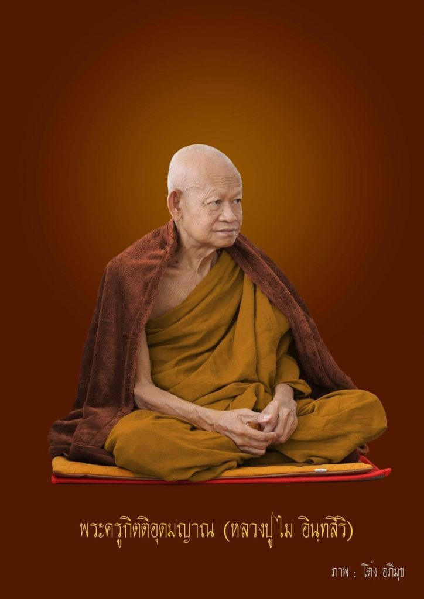

ข้อมูลสำคัญ

ประวัติเบื้องต้น
ผู้เขียนรู้จักท่านพระอาจารย์เมื่อ 5 ปีที่แล้ว สมัยนั้นไม่มีใครรู้จักองค์ท่าน ไม่โด่งดังเหมือนสมัยนี้ มองเผินๆ เหมือนพระธรรมดาเพียงเท่านั้น
ที่รู้จักเพราะหลวงปู่บุญมาบอกว่าให้ไปกราบท่านพระอาจารย์ไม เพราะท่านมีคุณวิเศษมาก ครั้งแรกที่ไปกราบท่านดูเหมือนท่านจะดุเป็นพิเศษในเรื่องข้อวัตรปฏิบัติ
วัยเด็กและครอบครัว
หลวงปู่ไมเป็นชาวอุดรธานีโดยกำเนิด เกิดเมื่อปี พ.ศ. ๒๔๙๐ มีพี่น้องทั้งหมด ๗ คน (ชาย ๖ หญิง ๑) ท่านอยากบวชตั้งแต่เรียนอยู่ ป.๔ แต่คุณพ่อขอให้ช่วยงานบ้านก่อน ท่านเป็นคนขยัน ทำงานทุกอย่างเพื่อเลี้ยงครอบครัว
สู่ร่มกาสาวพัสตร์
เมื่อปี พ.ศ. ๒๕๐๙ ท่านได้บรรพชาเป็นสามเณร จากนั้นปี พ.ศ. ๒๕๑๑ จึงอุปสมบทเป็นพระภิกษุในบวรพระพุทธศาสนา
แต่หลังจากบวชได้เพียง ๑ เดือน ๒๐ วัน ท่านได้พบความสงบจากการปฏิบัติ จนลืมความคิดที่จะสึกไปโดยสิ้นเชิง
การปฏิบัติธรรม
เมื่ออุปสมบทแล้ว ท่านพระอาจารย์ไม อินทสิริ มีโอกาสได้ศึกษาธรรมกับพ่อแม่ครูอาจารย์สายกรรมฐาน ที่เป็นศิษย์องค์สำคัญของท่านพระอาจารย์มั่น ภูริทัตโต หลายรูป
ช่วงแรกท่านพบความทุกข์ทรมานมากเมื่อนั่งสมาธิ เจ็บปวดเหน็บชาจนท้อแท้ แต่นึกถึงคำสอนครูบาอาจารย์จึงฮึดสู้ต่อ
ท่านเริ่มกิจวัตรเข้มงวด ตักน้ำ ทำวัตรเย็น เดินจงกรม ๒ ทุ่ม และนั่งสมาธิต่อจนดึกทุกวัน บั้นปลายชีวิตท่านได้มาสร้างวัดป่าเขาภูหลวง ตั้งอยู่ที่ ต.ระเริง อ.วังน้ำเขียว จ.นครราชสีมา และพำนักจำพรรษาอยู่ที่วัดแห่งนี้เรื่อยมาจนกระทั่งถึงกาลละสังขาร
เอาชนะมาร (ตาทิพย์)
คืนหนึ่งท่านตั้งสัจจะอธิษฐาน "คืนนี้กูจะสู้ให้มันตาย ถ้าไม่เห็นธรรมจะไม่ลุก" ท่านนั่งต่อสู้กับเวทนาจนถึงเที่ยงคืน
ทันใดนั้นจิตดิ่งลงสู่ความสงบ เกิดแสงสว่างสว่างไสวเหมือนดวงจันทร์ ท่านสามารถมองเห็นทุกอย่างในวัดได้แม้หลับตา นั่นคือจุดเริ่มต้นของ "ตาทิพย์" ที่เลื่องลือ
ครูบาอาจารย์
หลวงปู่ไมได้ศึกษาธรรมกับพ่อแม่ครูอาจารย์สายกรรมฐาน ซึ่งเป็นศิษย์สำคัญของท่านพระอาจารย์มั่น ภูริทัตโต อันได้แก่
การละสังขาร
ณ โรงพยาบาลรามาธิบดี กรุงเทพมหานคร
ทางวัดป่าเขาภูหลวงได้ประกาศ (คำสั่ง ๐๑/๒๕๖๔) โดยพระครูใบฎีกา อมร อุทโย เจ้าอาวาสวัดป่าเขาภูหลวง เรื่องการบำเพ็ญสรีรสังขาร โดยงดรับบุคคลภายนอกเนื่องจากสถานการณ์โควิด-๑๙
โอวาทธรรม
"ในโลกนี้หรือโลกหน้า การได้พบได้เจอกัน หรือจะเป็นพลัดพรากจากกัน ไม่ใช่สิ่งบังเอิญ ทุกอย่างมีเหตุมีปัจจัย"
"กิเลสไปที่ไหนจะมีรอยร้าวไปเรื่อยๆ กิเลสมีรอยร้าวคอยเผา คอยจุด คอยยุแหย่ก่อกวนไปเรื่อย ถ้าเรื่องของธรรมมีเหตุมีผลทุกอย่าง"
"กายเราก็เปื้อนได้ ใจเราก็เปื้อนได้ กายเปื้อน เราล้างออก แต่ใจเปื้อนนั้น ต้องใช้ธรรมะล้าง"